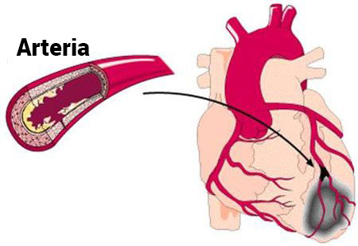
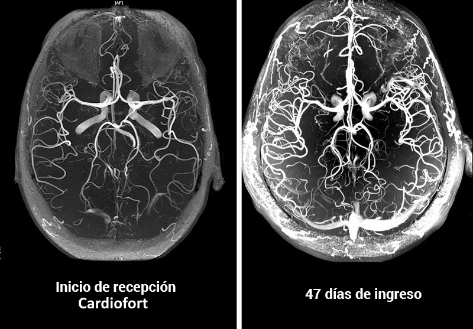

MEDICINA•INSTRUCCIÓN
El médico japonés te informará sobre los riesgos de hipertensión arterial en edades avanzadas
¿Qué es ideal para disolver las placas de colesterol y mejorar la circulación sanguínea?
Millones de personas tratan miles de enfermedades diferentes con montones de diferentes medicamentos, sin siquiera darse cuenta de que la raíz del mal no está donde duele. El colesterol no se hace notar, se acumula silenciosamente, asfixia lenta e imperceptiblemente los órganos vitales.
Con la acumulación de colesterol en el cuerpo, este aumenta como una avalancha el riesgo de desarrollar enfermedades asociadas con estenosis o bloqueo de los vasos sanguíneos.
¿Cuáles son los riesgos de las placas de colesterol?
La acumulación de colesterol en las paredes de los vasos sanguíneos comienza de forma activa después de los 40 años, y después de los 50 toma una velocidad asombrosamente rápida. Las barreras de "colesterol" resultantes deterioran el flujo sanguíneo. Gradualmente, se forma una placa aterosclerótica y el diámetro del vaso se vuelve cada vez más pequeño. Esto aumenta en gran medida el riesgo de obstrucción del vaso con un trombo. Cuando esto sucede, la sangre deja de fluir parcial o completamente a un órgano en particular, lo que conduce a graves alteraciones en su funcionamiento o la muerte de una persona.

El peligro también radica en el curso latente - asintomático de la enfermedad. La condición de los vasos se deteriora constantemente y los trastornos se manifestarán solo cuando los vasos ya se hayan reducido a la mitad. Es imposible decir exactamente cómo se manifestará la aterosclerosis; todo depende de a qué órgano de le haya disminuido la nutrición. Muy a menudo, la aterosclerosis daña los vasos del corazón, los intestinos, el cerebro, la aorta, los riñones, las extremidades inferiores y el páncreas.
La acumulación de colesterol (aterosclerosis) tiene un efecto perjudicial en todos los órganos y sistemas del cuerpo. La única pregunta es qué órgano será el "eslabón débil" y no sobrevivirá primero.
7 objetivos de colesterol
Aterosclerosis de la aorta
Con la aterosclerosis de la aorta, estamos hablando de la derrota de la arteria más grande del cuerpo. La aorta se asemeja a un tronco del que se ramifican otros vasos más pequeños.
La aorta incluye 2 secciones:
- Pectoral
- Abdominal
La región torácica suministra sangre a los órganos ubicados en el pecho, así como a la cabeza y el cuello.
La aorta abdominal dirige la sangre a los órganos ubicados en la cavidad abdominal y las extremidades inferiores.

La enfermedad se desarrolla en 2 etapas:
- En la etapa inicial, no hay manifestaciones externas de la enfermedad. Pero las complicaciones existentes ya se pueden detectar con la ayuda de pruebas de laboratorio.
- El período clínico se acompaña de signos pronunciados de la enfermedad.
Aterosclerosis de la aorta torácica
En la etapa inicial, la patología no viene acompañada de ningún síntoma. Los primeros signos que surgen suelen ser dolor en el pecho, que es de carácter periódico. El dolor puede disminuir, acumularse y no desaparecer durante varios días. A menudo acompañado de una sensación de falta de aire.
Otros síntomas incluyen un aumento de la presión arterial y el desarrollo de hipertensión.
Con una lesión significativa del arco aórtico, surgen dificultades para tragar, la voz se vuelve ronca. Las lesiones ateroscleróticas de la aorta torácica pueden ir acompañadas de crecimiento de vello en las orejas. Wen aparece en la cara, se producen canas prematuras.
Otros síntomas de lesiones de la aorta torácica:
- dolores que irradian del brazo, región cervical y lumbar;
- aumento de la presión arterial;
- golpeteo entre las costillas del lado derecho del pecho;
- ruido en la cabeza;
- mareos;
- dolor de cuello al intentar girar la cabeza.
En el contexto de la falta de suministro de sangre al corazón, se desarrollan las siguientes patologías:
- arritmia;
- insuficiencia cardíaca;
- angina de pecho;
- ataque cardíaco.
A menudo, el daño a la aorta torácica se combina con daño aterosclerótico en la arteria coronaria y daño en los vasos del cerebro.
Aterosclerosis de la aorta abdominal
La lesión aterosclerótica de la aorta abdominal se acompaña de una alteración del sistema digestivo y se manifiesta por los siguientes síntomas:
- Dolor de estómago. Son de naturaleza paroxística. A menudo, el paciente no puede indicar con precisión el lugar donde se localiza la sensación de dolor;
- Trastornos en las heces;
- Flatulencia;
- Acidez;
- Eructos y amargura;
- Trombosis de arterias viscerales. Una complicación peligrosa que puede resultar fatal. Se acompaña de necrotización de asas intestinales e inflamación extensa. La condición se acompaña de un dolor muy severo, que no se puede eliminar con la ayuda de analgésicos.
Como resultado de la formación de placas en esta área, existe una violación del suministro de sangre a los órganos pélvicos. Como complicaciones que surgen posteriormente, se pueden observar insuficiencia renal, enfermedades de las arterias viscerales.
Vasos cerebrales
El colesterol, que conduce a la aterosclerosis cerebral, altera tanto los vasos intracraneales como los extracraneales. La intensidad de los síntomas patológicos está directamente relacionada con el grado y la ubicación de las lesiones que han surgido.
Además de la complicación más peligrosa: accidente cerebrovascular, se puede observar la inhibición de la actividad del sistema nervioso central, el desarrollo de trastornos mentales, deterioro visual y deterioro de la memoria.

Los signos iniciales de daño ya aparecen en la edad adulta: 40-45 años.
En esta etapa, es posible la aparición de «ataques isquémicos», que se acompañan de alteración de la sensibilidad, trastornos del movimiento, patologías de la visión, la audición y el habla. A pesar de la gravedad de los síntomas, durante este período son de corta duración, reversibles y desaparecen por sí solos tras una única limpieza de los vasos con nutracéuticos.
Las lesiones ateroscleróticas graves pueden provocar un accidente cerebrovascular, es decir, necrosis del tejido cerebral. La sintomatología es la misma que en el caso anterior, pero tras la necrosis no hay mejoría significativa.
El cerebro también es responsable de la realización de funciones mentales superiores. Por lo tanto, la formación de placas también conduce a un deterioro de la inteligencia y la memoria, un cambio de carácter (labilidad del estado de ánimo, caprichos, pereza). En ausencia de medidas terapéuticas para liberar los vasos de la placa, tal lesión conduce al desarrollo de demencia, la enfermedad de Alzheimer. Tales lesiones son peligrosas con la posibilidad de discapacidad o muerte.
Hay 2 tipos de accidente cerebrovascular:
- isquémico;
- hemorrágico.
El accidente cerebrovascular ya ha llegado al límite de edad. Ya no está asociado con la vejez. La isquemia ocurre debido al bloqueo del lecho vascular por un trombo, la causa de la hemorragia es la ruptura del vaso cerebral.
Corazón
Una de las causas de muerte en pacientes con enfermedades cardiovasculares en el contexto de la acumulación de colesterol en los vasos es el bloqueo de la arteria coronaria principal.
Asociadas a esta lesión se encuentran enfermedades como la cardiopatía isquémica, la angina de pecho y el infarto de miocardio.
La cardiopatía isquémica es una patología cardíaca grave, que es todo un complejo de trastornos. Incluye angina de pecho, infarto de miocardio, cardiosclerosis.

La cardiopatía isquémica se manifiesta con mayor frecuencia por angina de pecho. En una etapa temprana, sus manifestaciones en forma de dolor en el pecho ocurren solo en el momento del esfuerzo físico. Esto es lógico, ya que en reposo, el trabajo del corazón requiere menos oxígeno, y con una actividad intensa, estas necesidades aumentan. Una reacción similar puede ser ante el estrés, la angustia emocional. Con el desarrollo de la aterosclerosis y una superposición cada vez mayor del diámetro del lecho vascular, la enfermedad isquémica se manifiesta cada vez más. En las últimas etapas de la enfermedad, cualquier movimiento del paciente ya provoca dolor.
Los signos clásicos de la angina de pecho incluyen:
- la aparición de dolor, tanto bajo la influencia del estrés como en reposo;
- el dolor se siente detrás del esternón, puede desplazarse al hombro (izquierdo), escápula, mano. Además, la intensidad del
- dolor está directamente relacionada con la gravedad del ataque;
- el dolor arde, presiona;
- puede detener el ataque tomando una tableta de nitroglicerina;
- corta duración de un ataque: no más de 5 minutos.
Diferencias entre ataque cardíaco y angina de pecho
- dolor de muy alta intensidad;
- la duración del ataque es de al menos 20 minutos;
- la nitroglicerina no ayuda con el infarto de miocardio;
- las sensaciones dolorosas son difusas.
La placa causada por el colesterol alto puede provocar la muerte súbita del paciente. Esta situación se desarrolla cuando, debido a una falla del suministro de sangre, primero cambia el ritmo cardíaco y luego el corazón se detiene.
Todas las lesiones vasculares del corazón son graves y peligrosas. sin el pleno funcionamiento del corazón, otros órganos no pueden funcionar normalmente. La aterosclerosis de los vasos del corazón también puede provocar un infarto de miocardio. Un ataque cardíaco es causado por la ruptura de la placa y la obstrucción del vaso por un coágulo de sangre. Como resultado, la sangre deja de fluir a un área determinada del músculo cardíaco y muere.

Después del desarrollo de una falla de la contractilidad del músculo cardíaco, la muerte ocurre dentro de varias horas o días. Sin embargo, incluso si una persona se salvó, todavía tiene una falla de suministro de sangre, lo que, al no limpiar los vasos sanguíneos del colesterol, tarde o temprano conducirá a un segundo ataque. Por tanto, la limpieza de los vasos sanguíneos con nutracéuticos es vital para los pacientes que han sufrido un infarto.
Además, en el contexto de los trastornos circulatorios, se desarrolla hipertensión. Se acompaña de una violación de las funciones cardíacas, procesos patológicos en el trabajo del sistema nervioso central, riñones.
La hipertensión también ocurre en el contexto de lesiones del cerebro, riñones, vasos periféricos. Con la patología cerebral, se manifiesta como deterioro de la conciencia, pérdida de la visión y daño renal que conduce a insuficiencia renal.
Vasos de las extremidades inferiores
El complejo de síntomas de las lesiones de las extremidades inferiores que provocan depósitos de colesterol incluye:
- susceptibilidad de las extremidades inferiores al frío;
- calambres en las piernas;
- cojera;
- úlceras tróficas, "malla" vascular y "asteriscos" que surgen después de lesiones cutáneas;
- venas varicosas;
- dolores que pueden ocurrir tanto en estado de actividad como en reposo (pueden variar en intensidad);
- degradación del tejido del cartílago, el desarrollo de artrosis.
Además del dolor, hay violaciones de apoyo y movimiento. Las manifestaciones surgen por analogía con las alteraciones en el trabajo del corazón: en la etapa inicial, el dolor aparece solo con un gran esfuerzo físico, largas caminatas. Gradualmente, la cantidad de estrés que causa el dolor disminuye. En la última etapa, los dolores son inquietantes y en reposo.
La cojera periódica es el síntoma principal en la eliminación de lesiones vasculares. Las sensaciones dolorosas se localizan principalmente en el muslo y los músculos de la pantorrilla.
La nutrición inadecuada que ingresa a las extremidades inferiores provoca palidez y entumecimiento de la piel, el vello de las piernas comienza a caer. Las úlceras resultantes son extremadamente difíciles de tratar, esto se debe al hecho de que los procesos regenerativos no se activan por completo debido a la falta de suministro de sangre. Como resultado de tales cambios, tarde o temprano comienza la gangrena: los tejidos mueren. Tomar medicamentos en esta etapa no da resultados. La gangrena solo se puede curar mediante una amputación.
El tratamiento incluye, además de la ingesta de nutracéuticos destinados a combatir la aterosclerosis, fisioterapia y tratamientos de spa.
Arterias renales
Con las lesiones ateroscleróticas de los vasos que suministran alimento al riñón, se desarrolla una arteriosia secundaria. Las manifestaciones características son el edema, que se forma como resultado de la retención de sodio en el cuerpo, la situación más difícil es el desarrollo de edema pulmonar. Una de las consecuencias es el infarto renal. Con daño a un riñón, los síntomas de la enfermedad no se expresan.
El bloqueo de la arteria renal con colesterol conduce a la formación de insuficiencia renal aguda.
Estas son las principales manifestaciones de la aterosclerosis de las arterias renales:
- hipertensión;
- hinchazón;
- dolor localizado en la espalda;
- debilidad, pérdida de fuerza.
¿Cómo deshacerse de las placas ateroscleróticas?
El tratamiento se basa en la limpieza sistemática de los vasos sanguíneos. Al menos una vez cada 5 años a partir de los 40 años para los hombres y desde los 45 para las mujeres.
Hasta hace poco, era imposible deshacerse de las placas ateroscleróticas ya existentes; la terapia se basó en ralentizar la formación de nuevas placas.
Pero todo eso cambió con el descubrimiento de los nutracéuticos.
Los medios modernos para combatir las placas de colesterol (nutracéuticos) le permiten limpiar los vasos sanguíneos en casa sin la supervisión de especialistas. Lo principal es observar con precisión la duración del curso de limpieza. La duración efectiva de la admisión es de 1,5 meses.
Durante 1,5 meses, los nutracéuticos se eliminan de los vasos, arterias y capilares del 89% al 97% de los sedimentos de colesterol. (Aproximadamente 3,7 kg)
¿Qué son las gotas «Cardiofort»?
Las gotas Cardiofort – son la clase más nueva de medicamentos para el tratamiento y la prevención de la aterosclerosis vascular.
Las gotas Cardiofort combinan seguridad y alta eficacia para combatir los depósitos de colesterol.
Las gotas Cardiofort están aprobados para la autoadministración para el tratamiento de la aterosclerosis y sus consecuencias.
Las gotas Cardiofort natural de los nutracéuticos elimina por completo los efectos secundarios y las complicaciones, por lo que se recomiendan para personas mayores y personas con enfermedades crónicas.
¿Cómo actúan los nutracéuticos en el cuerpo?
Las gotas Cardiofort actúan en 3 etapas:
- 1. Eliminan los depósitos de colesterol. Disuelven las placas ateroscleróticas, los coágulos de sangre y la cal cálcica. Aumentan la luz de los vasos sanguíneos y restauran la circulación sanguínea.
- 2. Eliminan las consecuencias de la mala circulación sanguínea. Enfermedades como la hipertensión, los dolores de cabeza, las venas varicosas, la diabetes tipo 2, la trombosis y las hemorroides se alivian completa o significativamente. Los acúfenos, los mareos desaparecen, la agudeza visual y la claridad de pensamiento mejoran.
- 3. Mejoran la resistencia y elasticidad de las paredes del vaso. Esto evita la formación de nuevas placas y reduce 11 veces el riesgo de accidente cerebrovascular.
«Cardiofort»

Las gotas «Cardiofort» hoy es el nutracéutico de última generación de 5ª generación con un efecto peróxido único que disuelve hasta el 97% de los depósitos de colesterol y duplica la luz vascular, restaurando la circulación sanguínea.
El efecto del peróxido es la capacidad de las moléculas activas de una sustancia para penetrar en las placas ateroscleróticas a través del recubrimiento fibroso. Este efecto asegura la disolución de los depósitos de colesterol, lo que no era posible hasta hace poco.
La ingesta de las gotas «Cardiofort» durante 2 meses 2 veces al día con el estómago vacío proporciona los siguientes resultados:
- Elimina hasta el 97% de las placas ateroscleróticas.
- Fortalece las paredes de los vasos sanguíneos.
- Normaliza la presión arterial.
- Estabiliza el azúcar en sangre.
- Restaura la actividad funcional del cerebro y el sistema nervioso.
- Detiene el proceso de envejecimiento del músculo cardíaco.
- Aumenta la resistencia física del miocardio.
- Aumenta el estado antioxidante del cuerpo.
- Mejora la circulación coronaria y cerebral.
- Normaliza el metabolismo de los minerales en el músculo cardíaco.
Vealo usted mismo
Las gotas «Cardiofort»
Paciente
mujer, 67 años. Al inicio de la terapia se observaron extensas lesiones de la aorta torácica y abdominal con depósitos de colesterol. Trastornos de la circulación sanguínea de los órganos abdominales, pulmones y bronquios.
mujer, 67 años. Al inicio de la terapia se observaron extensas lesiones de la aorta torácica y abdominal con depósitos de colesterol. Trastornos de la circulación sanguínea de los órganos abdominales, pulmones y bronquios.
Complicaciones asociadas:
Enfermedad hipertensiva de grado III, edema de las extremidades inferiores, venas varicosas, arritmia, estado prediabetes.
Enfermedad hipertensiva de grado III, edema de las extremidades inferiores, venas varicosas, arritmia, estado prediabetes.
Quejas de los pacientes:
dolores de cabeza, mareos, acúfenos, dolores y calambres en las piernas, problemas para dormir, presión hasta crisis hipertensivas.
dolores de cabeza, mareos, acúfenos, dolores y calambres en las piernas, problemas para dormir, presión hasta crisis hipertensivas.
Prescripción:
Las gotas «Cardiofort», 2 veces al día en ayunas. Visita de control después de 30 días y 60 días.
Las gotas «Cardiofort», 2 veces al día en ayunas. Visita de control después de 30 días y 60 días.
Angiograma general de los vasos del paciente

Resultados del tratamiento
Según los resultados de la terapia de 2 meses con
gotas «Cardiofort», se obtuvieron los siguientes resultados
- La presión arterial volvió a la normalidad en 130-139\85-89. Lo que es el límite superior de la norma
- No se observa edema.
- El nivel de azúcar no supera los 5,5 mmol/L.
- No se observan manifestaciones de varices.
- No se rastrea arritmia, el pulso es de 73 lpm.
- Los dolores de cabeza y el tinnitus no molestan después de la primera semana de tomar el medicamento.
- Sueño normalizado.
- Agudeza visual mejorada.
- El tono y el bienestar generales mejoraron significativamente
Circulación cerebral restaurada
Paciente
hombre, 51 años. Al comienzo de la terapia, hubo una obstrucción significativa de la circulación cerebral.
hombre, 51 años. Al comienzo de la terapia, hubo una obstrucción significativa de la circulación cerebral.
Complicaciones asociadas:
Aumento de la presión arterial, opacidad corneal, osteocondrosis de las regiones cervical y torácica, prostatitis crónica, hemorroides agudas, hiperglucemia.
Aumento de la presión arterial, opacidad corneal, osteocondrosis de las regiones cervical y torácica, prostatitis crónica, hemorroides agudas, hiperglucemia.
Queja del paciente:
dolores de cabeza, visión borrosa, ondas en la visión. Debilidad general y apatía, falta de voluntad para hacer algo. Baja eficiencia, incapacidad para concentrarse durante mucho tiempo, problemas de energía.
dolores de cabeza, visión borrosa, ondas en la visión. Debilidad general y apatía, falta de voluntad para hacer algo. Baja eficiencia, incapacidad para concentrarse durante mucho tiempo, problemas de energía.
Prescripción:
Gotas «Cardiofort», 2 veces al día en ayunas. Visita de control después de 30 días y 60 días
Gotas «Cardiofort», 2 veces al día en ayunas. Visita de control después de 30 días y 60 días

Resultados del tratamiento
La terapia de 1,5 meses con las gotas «Cardiofort» dio los siguientes resultados
- La presión arterial es completamente normal.
- Nivel de azúcar estabilizado.
- Los dolores de cabeza han desaparecido.
- Mayor eficiencia y actividad.
- La energía ha mejorado significativamente.
- Las hemorroides han desaparecido.
- Atrás quedaron los dolores de espalda, cuello y articulaciones.
- Agudeza visual mejorada.
- Los síntomas de la prostatitis no aparecen.
Desventaja significativa de «Cardiofort»
La única y, de hecho, la principal desventaja de «Cardiofort» nutracéutico es su precio.
Esto es lógico, porque los nutracéuticos son los últimos medicamentos con altos costos de producción. La composición natural es muy exigente en las condiciones de almacenamiento y procesamiento, lo que aumenta en gran medida el costo de producción.
En la mayoría de las cadenas de farmacias, «Cardiofort» no se suministra solo por el alto costo, no compran. Y los médicos no se arriesgan a recetar un medicamento tan caro.
Una vez al año, el fabricante de «Cardiofort» junto con la Comisión Internacional del Colesterol, organizan un Bonus Day. Todas las personas que necesitan limpiar los vasos sanguíneos, reducir los niveles de azúcar y la presión arterial pueden obtener «Cardiofort» absolutamente gratis.
Recuerde esta fecha:
– es el día internacional contra el colesterol.
En este día, puede pedir las gotas «Cardiofort» de forma gratuita, pero para ello debe cumplir con
varias condiciones.
Términos y condiciones para una botella GRATIS de «Cardiofort»:
- Solo para uso personal
Esto es necesario para tratar con revendedores que intentan comprar PRODUCT masivamente y revenderlos con su margen. - Solicite a través del sitio web oficial.
Comprar a través del sitio web oficial es una garantía de calidad y protección frente a los revendedores.
Por lo tanto, no se demore, solicite «Cardiofort» ahora mismo. Porque al siguiente día no podrá obtener el producto gratis.

¡DESCUENTO!
¡Reserve con el precio promocional antes de que la oferta se pase al siguiente lector!
La promoción finalizará en:
: :
DISCUSIONES